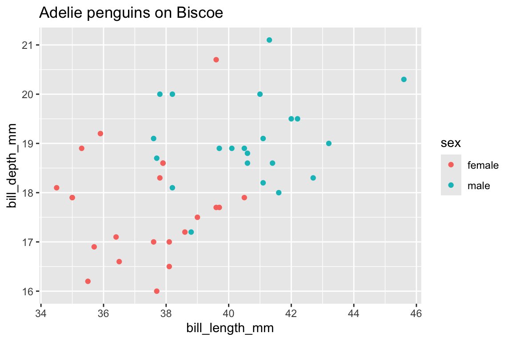
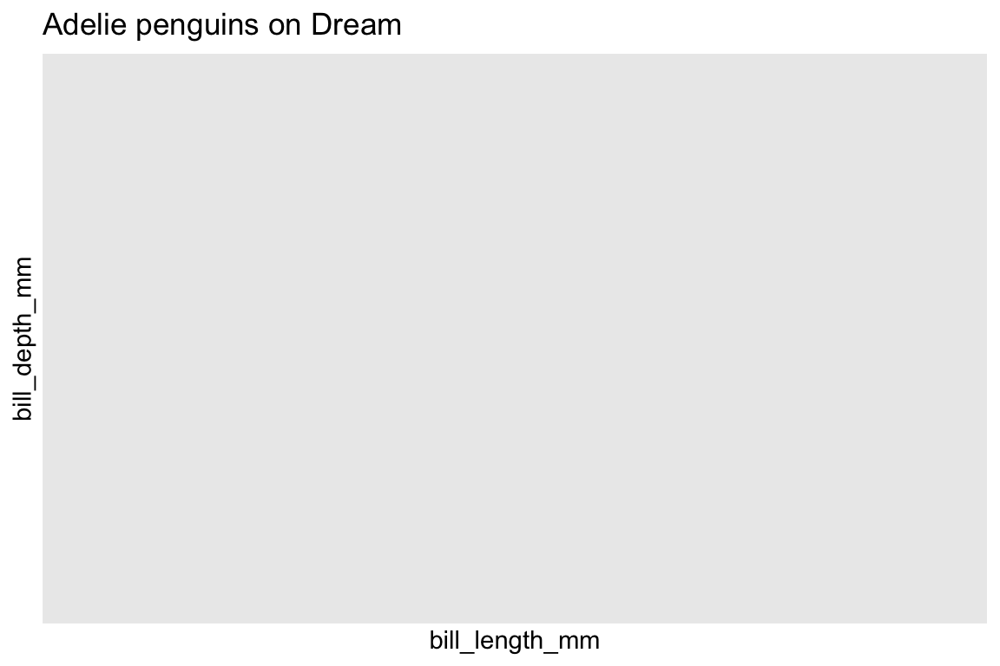
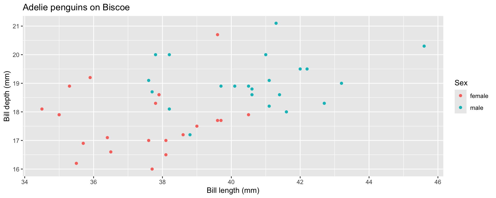
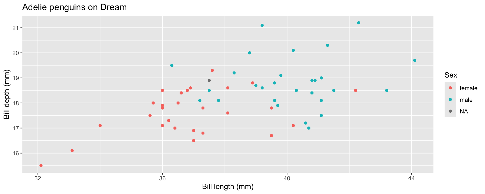

library(tidyverse) # includes purrr
penguins <- read_csv("data/penguins.csv")Research Software Engineering and Functional Programming
Objectives
By the end of this lecture you will be able to:
- explain what distinguishes research software from a research script
- apply the principles of separation of concerns, modularity, DRY and “fail fast” to structure an analysis
- write pure functions, and use
purrr’smap,reduceand predicate functions in place of loops
Setup
Packages and data
purrr is part of the tidyverse: it’s the package for functional programming and iteration.
Research software
Scripts don’t stay scripts
A script: written quickly, to answer one question, run once by its author.
Research software: code that others — or you, in six months — rely on. It’s re-run on new data, extended, shared, and its results get published.
“Can you re-run it on next year’s data?” → “…with one variable changed?” → “…and update the plots for the paper?”
Research software engineering (RSE): applying software engineering principles so that code is robust, reusable and maintainable.
Ask the room: who has had to re-run an analysis they wrote weeks ago? If the code is one long file with hard-coded paths and copy-pasted blocks, every request means editing several places and hoping nothing breaks — and nobody is sure the published numbers came from the code as it stands now. Week 3 (Quarto, git) was the first half of RSE; today is about structure.
Four principles
- Separation of concerns — each part has one job: load, clean, model, plot, report
- Modularity — build the parts as independent, reusable functions
- Don’t repeat yourself (DRY) — every piece of knowledge written in exactly one place
- Fail fast — check for problems early and stop with a clear error
Separation of concerns
Everything mixed together
read_csv("data.csv") |>
filter(!is.na(x)) |>
mutate(y = log(x)) |>
ggplot(aes(x, y)) +
geom_point()Clear separation
raw_data <- read_csv("data.csv")
clean_data <- clean_dataset(raw_data)
model <- fit_model(clean_data)
plot_results(model)Longer to write — each function must be defined somewhere — but it reads as a summary of the analysis, each step can be checked on its own, and a change to cleaning means editing one function.
Copy, paste, edit
ImportantTask
We want the same plot for Adelie penguins on two islands. What’s wrong here?
penguins |>
filter(species == "Adelie", island == "Biscoe") |>
ggplot(aes(x = bill_length_mm, y = bill_depth_mm, colour = sex)) +
geom_point() +
labs(title = "Adelie penguins on Biscoe")
penguins |>
filter(species == "Adelia", island == "Dream") |>
ggplot(aes(x = bill_length_mm, y = bill_depth_mm, colour = sex)) +
geom_point() +
labs(title = "Adelie penguins on Dream")Let them look for 30 seconds before moving on: the next slide shows the plots.
The result


A typo, "Adelia", crept in while editing the copy. R gives no error: filtering for a species that doesn’t exist is valid, and returns no rows — so the second plot is silently empty.
The general lesson: two copies of the same logic must be kept in step, and nothing warns us when they drift apart.
DRY + fail fast
ImportantTask
Write a function plot_bills(data, species_name, island_name) that draws this plot, and stops with a clear error if the species or island isn’t in the data.
plot_bills <- function(data, species_name, island_name) {
if (!(species_name %in% data$species)) {
stop("Unknown species: ", species_name)
}
if (!(island_name %in% data$island)) {
stop("Unknown island: ", island_name)
}
data |>
filter(species == species_name, island == island_name) |>
ggplot(aes(x = bill_length_mm, y = bill_depth_mm, colour = sex)) +
geom_point() +
labs(title = paste(species_name, "penguins on", island_name),
x = "Bill length (mm)", y = "Bill depth (mm)", colour = "Sex")
}
plot_bills(penguins, "Adelie", "Biscoe")
plot_bills(penguins, "Adelie", "Dream")

Does it fail fast?
plot_bills(penguins, "Adelia", "Dream")Error in plot_bills(penguins, "Adelia", "Dream"): Unknown species: Adelia- the typo now stops the analysis with a clear message
- improvements (like the axis labels) are made once and apply to every plot
Organising a project
my-project/
├── README.md # what the project is, and how to run it
├── data/ # raw data, never edited by hand
├── R/ # functions, e.g. cleaning.R and plots.R
├── analysis.qmd # the report, which uses the functions
└── results/ # generated outputs, can always be recreatedsource("R/cleaning.R") # runs the script as if typed in
source("R/plots.R")The functions (the how) live apart from the narrative (the what), and can be shared between reports — or a Shiny app.
All paths are relative to the project folder (week 3), so the project still works on another computer.
Speed vs structure
Research code is often exploratory and thrown away — but the parts that survive live far longer than expected.
- exploring: rapid iteration is fine
- once it works: refactor into functions, without changing what it does
- before sharing: clean it up
Habits that cost nothing even while exploring: use functions (even small ones), no hard-coded absolute paths, write down your assumptions.
“Perfect is the enemy of finished.” You don’t need an elaborate design: add structure when you notice patterns, like the same code appearing twice.
Functional programming
Paradigms
- Procedural: a sequence of steps
- Object-oriented: objects bundling data and behaviour
- Functional: pure functions and immutable data
R is functional
R supports all three, but is a natural fit for functional programming:
- functions are values: assign them, pass them, return them
- anonymous functions:
function(x) x + 1, or\(x) x + 1 - higher-order functions take or return functions (week 2)
Pure functions
A function is pure if
- its result depends only on its arguments, and
- it has no side effects — it changes nothing outside itself.
Everything a pure function does is visible in its arguments and its return value, so it is easy to test, debug and reason about.
Which are pure?
ImportantTask
Which of these functions are pure?
add <- function(x, y) x + y
counter <- 0
increment <- function() {
counter <<- counter + 1
counter
}
z <- 10
add_z <- function(x) x + zadd: pureincrement: impure —<<-changescounteroutside the function (breaks 2)add_z: impure — its result depends on the globalz(breaks 1). Fix: passzas an argument.
Also impure by design: rnorm (different every call, unless the seed is set), and anything that reads files, plots or prints. That’s fine — the aim is to keep the impure parts few and at the edges: read data once at the start, save once at the end, pure functions in between. Shiny is organised the same way: reactive() computes values; observers exist for side effects.
Immutability
You’ve been doing this since week 4:
penguins_kg <- penguins |> mutate(body_mass_kg = body_mass_g / 1000)
"body_mass_kg" %in% names(penguins_kg)[1] TRUE"body_mass_kg" %in% names(penguins) # the original is unchanged[1] FALSEdplyr verbs return a new, modified copy. penguins only changes if you assign the result back to it.
purrr
Apply a function to every element
ImportantTask
Square every element of x <- 1:10 using a for loop, then using sapply(), then using purrr::map_dbl().
x <- 1:10
square <- function(v) v^2
squared_loop <- numeric(length(x))
for (i in seq_along(x)) {
squared_loop[i] <- square(x[i])
}
squared_sapply <- sapply(x, square)
squared_map <- map_dbl(x, square)
squared_map [1] 1 4 9 16 25 36 49 64 81 100The map states the intent in one line: no index to get wrong, no result to set up in advance, no variables leaking out.
Loops aren’t wrong — they’re the clearest choice when each step depends on the previous one (the random walk from Lab 2). And for squaring, vectorised x^2 is simplest of all: mapping is for functions that work on one element at a time, such as reading one file.
Why not sapply?
ImportantTask
Predict what type of object each call returns.
sapply(1:3, function(v) v^2)
sapply(1:3, function(v) c(v, v^2))
sapply(1:3, function(v) seq_len(v))
sapply(integer(0), function(v) v^2)sapply(1:3, function(v) v^2) # a numeric vector[1] 1 4 9sapply(1:3, function(v) c(v, v^2)) # a matrix! [,1] [,2] [,3]
[1,] 1 2 3
[2,] 1 4 9sapply(1:3, function(v) seq_len(v)) # a list![[1]]
[1] 1
[[2]]
[1] 1 2
[[3]]
[1] 1 2 3sapply(integer(0), function(v) v^2) # an empty list, not a vector!list()The last one is the dangerous one: code that always got a numeric vector suddenly gets a list when its input happens to be empty (e.g. no files matched a pattern), and fails somewhere far from the real cause.
map is type stable
The name tells you the type of the result:
| Function | Returns |
|---|---|
map() |
a list — results can be anything |
map_lgl(), map_int(), map_dbl(), map_chr() |
a vector of that type |
map fails fast
map_dbl(integer(0), function(v) v^2)numeric(0)map_dbl(1:3, function(v) c(v, v^2))Error in `map_dbl()`:
i In index: 1.
Caused by error:
! Result must be length 1, not 2.An empty input gives an empty double; a result that doesn’t fit is an error, straight away — fail fast again.
Writing functions inline
Three equivalent ways:
map_dbl(1:5, function(v) v^2)[1] 1 4 9 16 25map_dbl(1:5, \(v) v^2) # base R shorthand[1] 1 4 9 16 25map_dbl(1:5, ~ .x^2) # purrr formula: .x is the argument[1] 1 4 9 16 25And in parallel over two vectors (.x, .y), or many (pmap):
map2_dbl(1:5, 6:10, \(a, b) (a + b)^2)[1] 49 81 121 169 225All three styles are idiomatic and appear in documentation and online, so students must be able to read each. Use whichever you find clearest.
Lists of results
ImportantTask
Split penguins into one tibble per species, compute the number of penguins and mean body mass of each, then combine the results into a single table.
by_species <- split(penguins, penguins$species) # list of tibbles
summaries <- by_species |>
map(\(df) summarise(df, n = n(),
mean_mass = mean(body_mass_g, na.rm = TRUE)))
summaries |> list_rbind(names_to = "species")# A tibble: 3 x 3
species n mean_mass
<chr> <int> <dbl>
1 Adelie 152 3701.
2 Chinstrap 68 3733.
3 Gentoo 124 5076.group_by() + summarise() does this more simply for one data frame. Lists of results come into their own when data arrive in pieces — the classic case:
files <- list.files("data/monthly", pattern = "\\.csv$", full.names = TRUE)
all_data <- files |> map(read_csv) |> list_rbind()or when each piece produces something that isn’t a table (a model, a plot).
reduce: combine two at a time
ImportantTask
reduce(x, f) combines the elements of x pairwise: f(f(f(x1, x2), x3), x4)… Use it to add up 1:10.
x <- 1:10
reduce(x, \(cur, new) cur + new)[1] 55reduce(x, `+`)[1] 55The same as this loop, with an accumulator cur:
cur <- x[1]
for (new in x[-1]) {
cur <- cur + new
}
cur[1] 55An accumulator with .init
When the accumulator isn’t the same type as the elements, give a starting value:
reduce(
x,
\(cur, new) list(sum = cur$sum + new, prod = cur$prod * new),
.init = list(sum = 0, prod = 1)
) |>
unlist() sum prod
55 3628800 Pointless here — sum() and prod() are faster — but it pays off when each pass through the data is expensive, e.g. many files on disk. We’ll use exactly this idea for big data in week 10.
Predicates
A predicate is a function that returns TRUE or FALSE. keep() keeps the elements for which it is TRUE:
x |> keep(\(v) v > 5)[1] 6 7 8 9 10every() and none() check whether all, or no, elements pass; all of them work on lists as well as vectors. They’re in the notes.
Defensive programming
Silent recycling
ImportantTask
From Lab 2: what does this return, and why is it a problem?
distance <- function(x, y) sqrt(sum((x - y)^2))
distance(1:4, 1:2)[1] 2.828427A number — but it’s meaningless. - silently recycles the shorter vector to the length of the longer one, so 1:2 is treated as c(1, 2, 1, 2).
Check your inputs
distance <- function(x, y) {
stopifnot(
"Both x and y must be numeric vectors." =
is.numeric(x) && is.numeric(y),
"x and y must have the same length." = length(x) == length(y)
)
sqrt(sum((x - y)^2))
}
distance(1:4, 1:2)Error in distance(1:4, 1:2): x and y must have the same length.Validate inputs and fail fast with a clear message, rather than letting a wrong answer travel silently through the analysis.
stopifnot() does nothing if every condition is TRUE; otherwise it stops at the first failure. The names become the error messages — much more helpful to someone else than length(x) == length(y) is not TRUE. The if (...) stop(...) form from plot_bills is equivalent.
Wrap-up
Today you can now:
- structure an analysis: separate concerns, write functions, don’t repeat yourself, fail fast
- recognise pure functions, and keep side effects at the edges
- iterate with
map_*(), combine withreduce(), filter withkeep()and friends
Read the notes
We didn’t cover in detail:
- handling errors:
try(),tryCatch(), andpurrr::possibly()for reading many files when some may fail - unit tests with
stopifnot()andtestthat - documenting functions with roxygen comments (
#') - more higher-order functions:
every(),none(),compose()andpartial() - dependency management with
renv